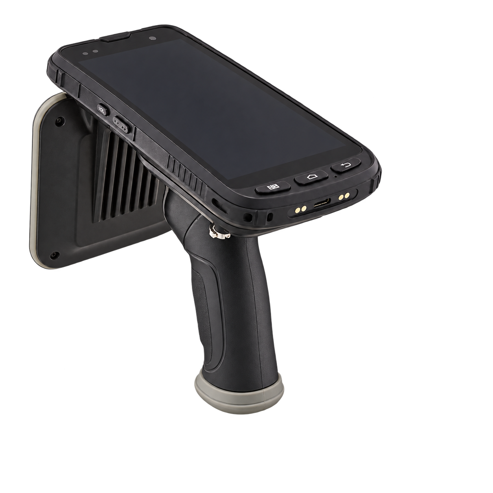

RFID주변 여러 물품을 한 번에
0 / 150
불용 0 / 2이동 0 / 2
사무실·회의실·국장실·탕비실을 걸으며 태그가 붙은 150개 물품을 조사해 보세요.
태극 문양과 RFID 글자가 있는 흰색 라벨이 물품에 부착된 전자태그입니다. 체험에서 잘 보이도록 크기를 확대했으며, 인식하면 연녹색으로 바뀝니다.

PC는 WASD, 휴대폰은 왼쪽 원형 패드로 이동합니다. 화면을 드래그해 시선을 돌려보세요.
불용·이동물품도 가까이 가면 함께 확인됩니다.
인식 방식의 차이를 보여주는 시뮬레이션입니다. RFID는 전방 10m 이내 여러 태그를 함께 읽고 연결선을 표시합니다. 바코드는 전방 2.2m 이내에서 가까운 태그부터 하나씩 읽습니다. 실제 장비 성능을 보증하는 수치가 아니며 장비·태그·재질·현장에 따라 달라집니다. 리더기 화면은 기존 실제 구동영상 24초 구간의 재물조사 화면 캡처입니다.
물품 수량과 조사 환경을 알려주시면
프로그램부터 장비, 현장 조사까지 함께 제안합니다.